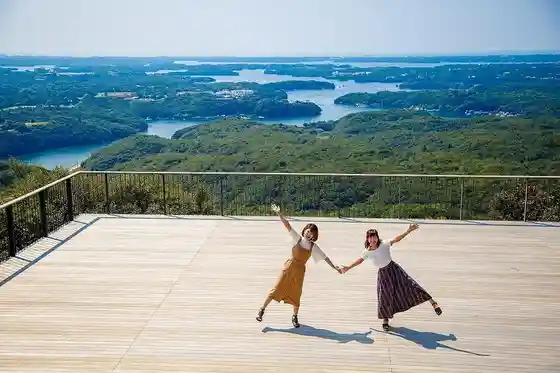
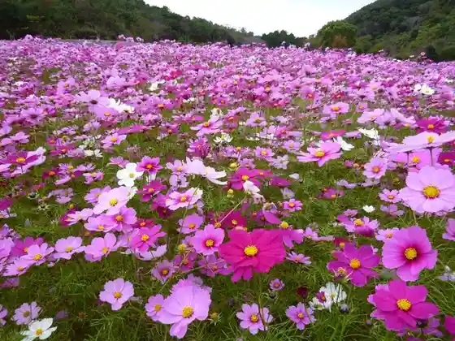
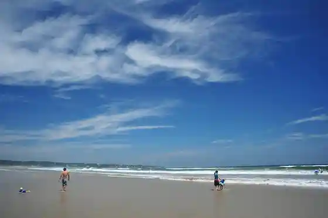
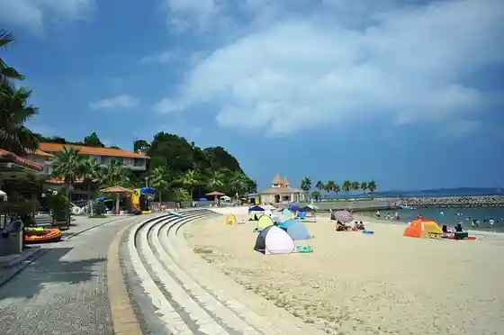

Yokoyama Lookout (Yokoyama Tenku Kafeterasu)
Shima, Mie · 0599-44-0567 · Official / source link

Shima Tourist Farm
Shima, Mie · 0599-44-0288 · Official / source link

Ago no Matsubara Beach
Shima, Mie · 0599-45-3944 · Official / source link

Wataka no Paru Beach
Shima, Mie · 0599-57-2590 · Official / source link

Gyoza Shirahama Beach
Shima, Mie · 0599-88-3018 · Official / source link
Jiro Rokuro Beach
Shima, Mie · 0599-72-4636 · Official / source link
Oya Hama Beach (BIG ARROW BEACH)
Shima, Mie · 080-9119-4062 · Official / source link
Daiji Tera
Shima, Mie · 0599-72-0089 · Official / source link
NEMU GOLF CLUB
Shima, Mie · 0599-52-1101 · Official / source link
Shima Supein Village Parugaesupanya
Shima, Mie · 0599-57-3333 · Official / source link
An Jo Saki Todai Museum
Shima, Mie · 0599-47-5622 · Official / source link
Iso Fue Misaki Lookout (Tsubasu no Kane)
Shima, Mie · 0599-46-0570 · Official / source link
Ago Wan Teiki Fune
Shima, Mie · 0599-43-1023 · Official / source link
NEMU RESORT
Shima, Mie · 0599-52-1211 · Official / source link
Satoshi Shima Esupanyakuruzu
Shima, Mie · 0599-43-1023 · Official / source link
Shima Hama Shima Iso Taiken Shisetsu (Umi Hozuki)
Shima, Mie · 0599-53-1002 · Official / source link
Shima Chichukai Village
Shima, Mie · 0599-52-1226 · Official / source link
Kiri Kaki Lookout
Shima, Mie · Official / source link
Roadside Station (Ise Shima)
Shima, Mie · 0599-56-2201 · Official / source link
Ten no Iwato (Eri Hara no Mizuana)
Shima, Mie · 0599-46-0570 · Official / source link
Katsuo no Ten Paku
Shima, Mie · 080-2612-3801 · Official / source link
An Jo Saki Lighthouse
Shima, Mie · 0599-47-5622 · Official / source link
Daio Saki Lighthouse
Shima, Mie · 0599-72-1899 · Official / source link
Ama Santo Moguro U !
Shima, Mie · 0599-52-0882 · Official / source link
Satoshi Shima Fisshingu Park Kaiyu En
Shima, Mie · 090-3300-8127 · Official / source link
U Kehi Shrine
Shima, Mie · 0599-44-0339 · Official / source link
U Kehi Jinja Juso
Shima, Mie · 0599-53-3007 · Official / source link
Shima Oto Campground
Shima, Mie · 0599-85-6500 · Official / source link
Kuki Ichizoku no Haka
Shima, Mie · 0599-46-0570 · Official / source link
Ago no Matsubara Chiiki Kasseika Center
Shima, Mie · 0599-45-3944 · Official / source link
Shima Nature Gakko
Shima, Mie · 0599-72-1733 · Official / source link
NARUMI Factory Shop
Shima, Mie · 0599-55-3637 · Official / source link
Wataka no Paru Beach Hoshizora Kansokujo
Shima, Mie · 0599-57-2202 · Official / source link
Sumairusakuru Chushajo
Shima, Mie · 090-9113-1511 · Official / source link
Ise Shima Samitto Memorial Museum Samieru
Shima, Mie · 0599-44-0205 · Official / source link
Ise Shima Onsen Shima Supein Village (Himawari Baths)
Shima, Mie · 0599-57-3700 · Official / source link
Shima Chichukai Village Kurafuto Workshop Recuerdos
Shima, Mie · 0599-52-1226 · Official / source link
Shima Maruyama Hashi
Shima, Mie · 0599-43-5125 · Official / source link
Wa Gu Kannon Do
Shima, Mie · 0599-85-1600 · Official / source link
Shima E Kaki no Town Daio Bijutsu Gyararii
Shima, Mie · 0599-72-4336 · Official / source link
Sozo Forest Yokoyama
Shima, Mie · 0599-46-0570 · Official / source link
Sami Cho Shrine
Shima, Mie · 0599-55-0038 · Official / source link
Ase Kaki Jizo (Do no Yamaimo Shi Do)
Shima, Mie · 0599-46-0570 · Official / source link
Ebisugaoka
Shima, Mie · 0599-44-0005 · Official / source link
Sekibutsu (Shio Hotoke)
Shima, Mie · 0599-44-0339 · Official / source link
Paru Miki
Shima, Mie · 0599-88-3592 · Official / source link
Ago Wan
Shima, Mie · 0599-44-0005 · Official / source link
LUXUNA Ise Shima (Raguna)
Shima, Mie · 0599-77-7500 · Official / source link
Shima Tomoyama Koen Yagaikatsudo Center
Shima, Mie · 0599-72-4636 · Official / source link
Mugisaki Lighthouse
Shima, Mie · 0599-44-0005 · Official / source link
I Zatsu Miya (Ko Dai Shrine Betsumiya)
Shima, Mie · 0596-24-1111 · Official / source link
Ise Ebi Daio Zo
Shima, Mie · 0599-46-0570 · Official / source link
Hachiman San Park
Shima, Mie · 0599-46-0570 · Official / source link
Katada Inari Shrine
Shima, Mie · 0599-46-0570 · Official / source link
Nakiri Shrine
Shima, Mie · 0599-72-0165 · Official / source link
An Jo Misaki
Shima, Mie · 0599-46-0570 · Official / source link
Shi Nochi Hama
Shima, Mie · 0599-46-0570 · Official / source link
Shima Kokubunji
Shima, Mie · 0599-47-3128 · Official / source link
Konpira Yama Lookout
Shima, Mie · 0599-44-0005 · Official / source link
I Zatsu Miya
Shima, Mie · 0599-55-0038 · Official / source link
Yokoyama Bijita Center
Shima, Mie · 0599-44-0567 · Official / source link
Shima Tomoyama Park
Shima, Mie · 0599-72-4636 · Official / source link
Daio Saki
Shima, Mie · 0599-46-0570 · Official / source link
Ko Shirahama
Shima, Mie · 0599-46-0570 · Official / source link
Ama Koya Taiken Shisetsu Satomi Iori
Shima, Mie · 0599-85-1212 · Official / source link
Azuri Hama
Shima, Mie · 0599-46-0570 · Official / source link
Bin Tama Rodo
Shima, Mie · Official / source link
Gyoza Misaki Campground
Shima, Mie · 0599-88-3522 · Official / source link
Kintetsu Hama Shima Kantsurii Club
Shima, Mie · 0599-52-1141 · Official / source link
Kintetsu Satoshi Shima Kantsurii Club
Shima, Mie · 0599-43-1082 · Official / source link
Kaijo Takushii (Satoshi Shima Shima Chichukai Village) Umi Sanpo & Kafe Entrada Satoshi Shima
Shima, Mie · 0599-52-1226 · Official / source link
Ago Furusato Park
Shima, Mie · 0599-44-0305 · Official / source link
Irako Suzushiro no Shihi
Shima, Mie · 0599-85-2222 · Official / source link
Koshiga Shrine
Shima, Mie · 0599-85-1212 · Official / source link
Isobe Shrine
Shima, Mie · 0599-55-0138 · Official / source link
An Jo Shrine
Shima, Mie · 0599-46-0570 · Official / source link
Sakiyama Park
Shima, Mie · 0599-46-0570 · Official / source link
Shima Tourist Information
Shima, Mie · 0599-46-0570 · Official / source link
Wataka no Enchi
Shima, Mie · 0599-46-0570 · Official / source link
Gyoza Tsume Setsu Fudo Mikoto
Shima, Mie · 0599-88-3431 · Official / source link
Uga Ta Shrine
Shima, Mie · 0599-43-0332 · Official / source link
to Shigeyama Lookout (Bojogaoka Lookout)
Shima, Mie · 0599-72-4636 · Official / source link
Matoya Wan Bridge
Shima, Mie · 0599-46-0570 · Official / source link
Shima Hama Shima B&G Kaiyo Center
Shima, Mie · 0599-53-2636 · Official / source link
Shio Shika Beach
Shima, Mie · 0599-46-0570 · Official / source link
Ojoka Burial Mound
Shima, Mie · 0599-44-0339 · Official / source link
Yakushido
Shima, Mie · Official / source link
Dainichi Do
Shima, Mie · Official / source link
Yokoyama Haikingukosu
Shima, Mie · 0599-44-0005 · Official / source link
Nishiyama Bojogaoka
Shima, Mie · Official / source link
Matoya Wan Yuran
Shima, Mie · 0599-57-2325 · Official / source link
Ago Tokusambutsu Kaihatsu Center
Shima, Mie · 0599-43-4799 · Official / source link
Do no Yama Kusurishi Nyorai Zazo
Shima, Mie · 0599-72-0789 · Official / source link